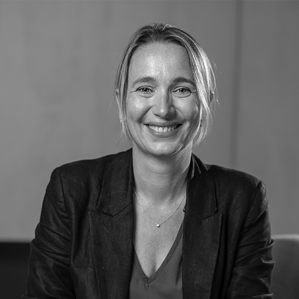

Caroline Le Bars
Head of Customer Strategy & Transformation, frog France, part of Capgemini Invent
As Head of Customer Strategy & Transformation at frog France, Caroline partners with leading luxury brands to reinvent customer experiences, client relationships and growth models. Over the past 20 years, she has led transformation programs spanning omnichannel commerce, customer care, service innovation and AI-enabled experiences. A graduate of EM Lyon, NEOMA Business School and ITAM Mexico, Caroline is passionate about helping luxury maisons remain distinctive, desirable and relevant in a rapidly evolving world.
As Head of Customer Strategy & Transformation at frog France, Caroline partners with leading luxury brands to reinvent customer experiences, client relationships and growth models. Over the past 20 years, she has led transformation programs spanning omnichannel commerce, customer care, service innovation and AI-enabled experiences. A graduate of EM Lyon, NEOMA Business School and ITAM Mexico, Caroline is passionate about helping luxury maisons remain distinctive, desirable and relevant in a rapidly evolving world.
We respect your privacy
We use Cookies to improve your experience on our website. They help us to improve site performance, present you relevant advertising and enable you to share content in social media. You may accept all Cookies, or choose to manage them individually. You can change your settings at any time by clicking Cookie Settings available in the footer of every page. For more information related to the Cookies, please visit our Cookie Policy.